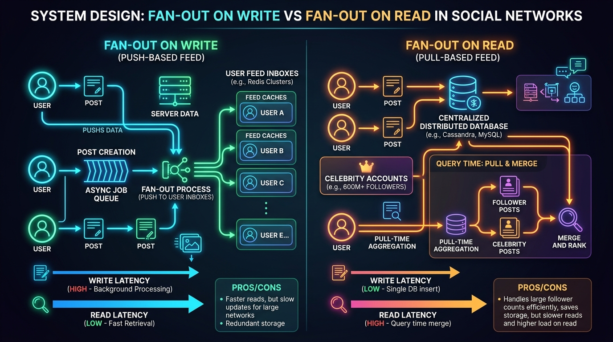
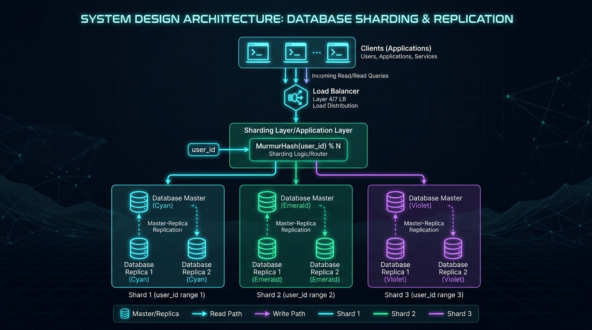

When a celebrity with 600 million followers posts a photo on Instagram, or when 50 million fans open the app simultaneously during the World Cup, how does the platform deliver reels, likes, and feed updates in under 200 milliseconds without melting its servers?

Figure 1: End-to-end distributed system architecture for handling massive concurrency across Edge CDNs, Load Balancers, Redis, and Sharded DBs.
1. The Core Challenge: The Math of Concurrency
If 50 million users refresh their feed at once:
- A single server can handle roughly 5,000 to 10,000 concurrent socket connections before running out of file descriptors and RAM.
- A single monolithic SQL database maxes out at a few thousand concurrent queries before locking tables and crashing.
To solve this, modern platforms use a stateless horizontal scaling architecture with aggressive caching and asynchronous background pipelines.
2. The Secret Behind Instant Feeds: Fan-Out on Write vs. Fan-Out on Read

Figure 2: Push-based Feed (Fan-out on Write) vs Pull-based Feed (Fan-out on Read for 600M+ celebrity accounts).
When you open Instagram, the app does NOT run a massive SQL query joining tables across all your friends in real-time. That would take 10 seconds! Instead, feeds are pre-computed using two distinct patterns:
| Strategy | How It Works | Pros | Cons / Pitfall |
|---|---|---|---|
| Fan-Out on Write (Push) | When User A posts a photo, a background worker pushes that post ID directly into the Redis inbox of all followers immediately. | Instant Feed Read: Loading feed is $O(1)$ from Redis cache. | The Celebrity Problem: If Ronaldo posts to 600M followers, the system must perform 600M database write operations at once! |
| Fan-Out on Read (Pull) | When a user opens the app, the feed is generated on-the-fly by fetching recent posts from followed accounts and sorting them. | Zero write amplification when celebrities post. | Slower read latency on feed reload. |
The Hybrid Solution: How Meta Solves It
Meta uses a Hybrid Fan-out Model:
- Regular users (less than 20,000 followers) use Fan-out on Write: Posts are pushed into followers' Redis timeline caches.
- Celebrities / Influencers (millions of followers) use Fan-out on Read: Their posts are fetched and merged into the user's timeline on-demand when the user opens the app.
3. Database Sharding: Splitting Data Across Thousands of Servers

Figure 3: Consistent Hashing and User-ID based Partitioning across Database Master-Replica Shards.
You cannot store 100 billion photos, likes, and comments on a single database disk. Instead, Instagram shards data across thousands of PostgreSQL / Cassandra database nodes using a Consistent Shard Key (such as user_id):
// Conceptual Shard Routing Formula
const shardNumber = MurmurHash3(userId) % TOTAL_SHARD_COUNT;
const targetDatabase = shardMap[shardNumber];
// Now query ONLY that specific database shard!
const userPosts = await targetDatabase.query(
"SELECT * FROM posts WHERE user_id = $1 ORDER BY created_at DESC LIMIT 20",
[userId]
);
By partitioning on user_id, all data for a single user (their profile, posts, photos) lives on the exact same database shard. This avoids expensive distributed cross-shard joins!
4. Edge CDNs: Offloading 95% of Bandwidth
Videos and high-res photos consume massive bandwidth. When a reel goes viral, Instagram does not fetch it from the origin database in Oregon or Virginia.
- Static images and video chunks are cached on Point of Presence (POP) Edge CDN servers located in Mumbai, London, Tokyo, etc.
- Your phone downloads the video from an edge cache located 5 miles away from your house, saving origin servers from burning out.
5. Graceful Degradation & Circuit Breakers
What happens if the comment system gets overloaded during a viral live event?
- Circuit Breakers: If the Comment Microservice starts failing, the system temporarily disables comments or serves cached comments rather than crashing the entire app.
- Core Priority: Viewing photos and reels continues working flawlessly even if secondary features (like follower count counters or view metrics) update asynchronously with a 30-second delay.
Figure 4: Real production monitoring view: 98%+ CDN cache hit ratio, sub-5ms Redis reads, and multi-shard database scaling under extreme peak loads.
6. Summary & Key Takeaways
- Stateless Compute: App servers do not hold user session state; any server can handle any request behind NGINX/Envoy load balancers.
- Hybrid Fan-out: Push model for regular users, Pull model for celebrities with millions of followers.
- Consistent DB Sharding: Partition data by
user_idto distribute read/write load evenly across thousands of DB nodes. - Redis Caching + Global CDNs: Serve 90%+ of read requests directly from RAM and edge caches with sub-10ms response times.
💬 Join the Discussion
How would you design the feed algorithm for a platform with 1 billion users? Share your thoughts on LinkedIn!